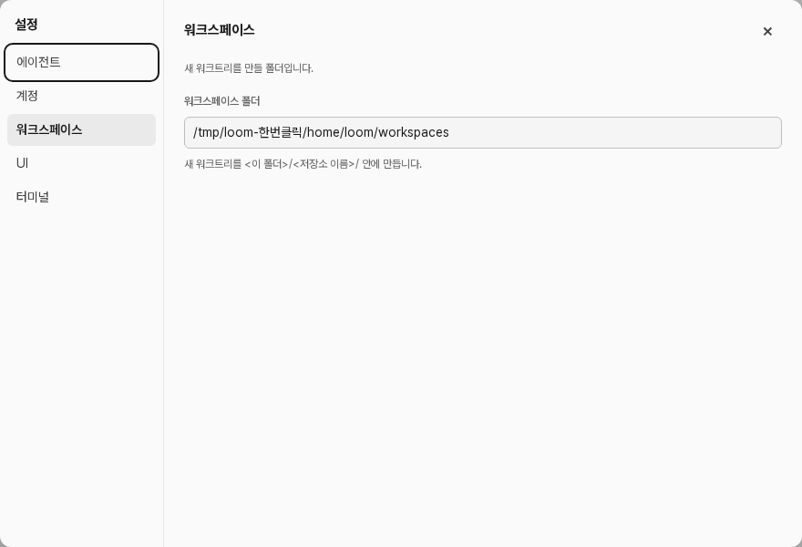

문서 ID: M24응답할 곳: 총괄 · loom 총괄연 담당: 워커 · 한번클릭v1 · 2026-10-21
웹 버전: 화면에서 loom 끄기
사람 결정: 탭을 닫아도 loom은 계속 돈다. 끄는 버튼은 화면에 둔다. 버튼은 웹 버전에만 보인다. 데스크톱 앱은 창을 닫으면 꺼진다. 점선이 바뀌는 곳이다.
지금 시험 데몬 캡처 · 설정 › 워크스페이스

① 설정 창 왼쪽 아래 [loom 끄기] 권장
워크스페이스
- 누르면 묻지 않고 바로 끈다. 노드(에이전트)는 계속 돌고, 다음에 열면 다시 붙는다.
- 어느 탭에서도 같은 자리에 보인다.
② 다른 안: 왼쪽 사이드바 아래 설정 줄 밑
- 늘 보이지만 실수로 누르기 쉽다.
③ 누른 뒤 화면 전체
loom이 꺼졌습니다
바탕 화면의 loom 아이콘을 다시 누르면 열립니다.
- 탭은 그대로 둔다. 다시 켜면 이 탭을 새로 고쳐도 된다.
승인할 것
- 자리: ① 설정 창 왼쪽 아래(권장) 또는 ② 사이드바 아래.
- 확인 창 없이 바로 끄기(권장). 노드는 꺼지지 않는다.
- ③의 문구.